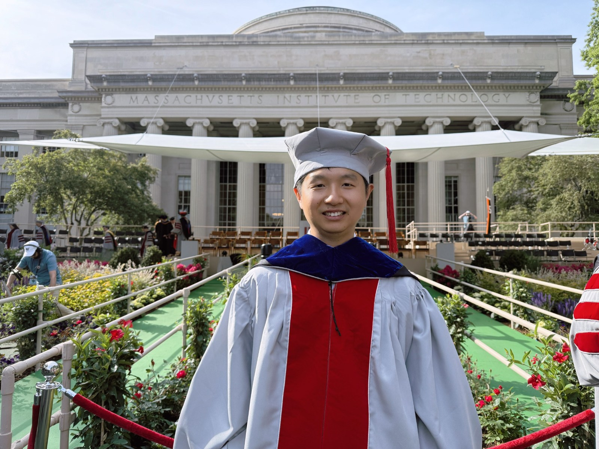

I am a postdoctoral associate in Mechanical Engineering at MIT, working with Prof. Ming Guo and Prof. Roger D. Kamm. I received my Ph.D. in Mechanical Engineering from MIT in 2024, advised by Prof. Guo.
My training connects device engineering, biological experiments, and computational modeling, from tools for cellular delivery and biofabrication to the mechanics of multicellular tissues.
Read my curriculum vitae (PDF, opens in new tab)Education
2024
Massachusetts Institute of Technology
Ph.D., Mechanical Engineering
2019
Tsinghua University
M.S., Mechanical Engineering
2016
Doctoral thesis at MIT
Beihang University
B.S., Mechanical Engineering